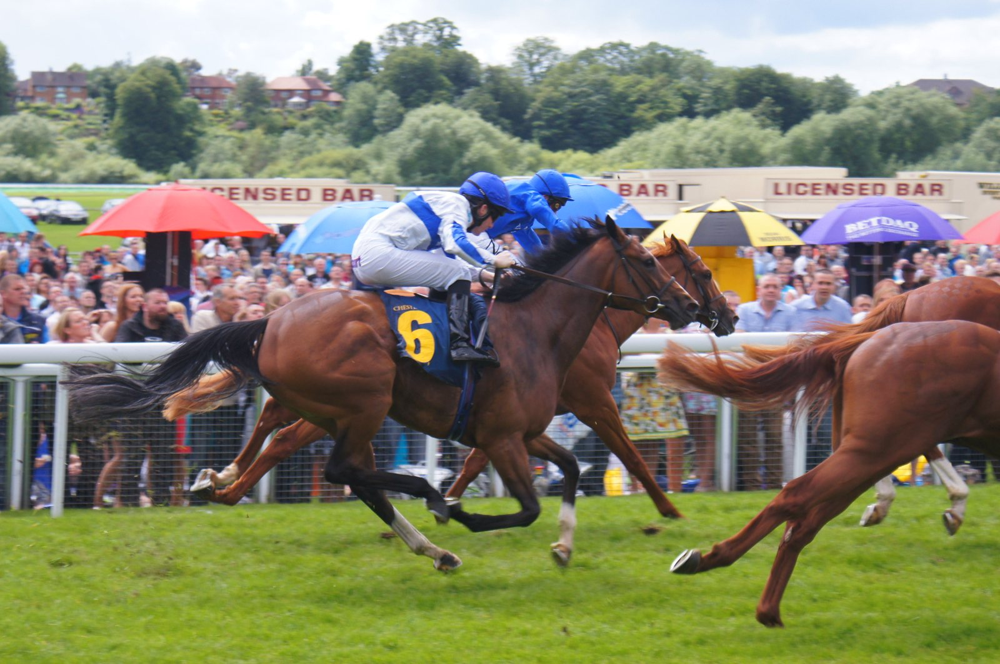

Métronomique completa en el Prix Orcada el camino al Prix Maurice Gillois en Auteuil
France Galop ha definido en el Prix Orcada, Grupo 3 reservado a los 4 años, el último ensayo antes del Prix Maurice Gillois, Grupo 1 que cada noviembre decide el campeonato francés de steeple-chase de la generación.

Métronomique llega con el currículo mejor afinado de los 4 años franceses sobre vallas y troncos: ganó el Prix Ferdinand Dufaure en primavera dominando la carrera sin oposición y en septiembre se adjudicó el Prix The Fellow-Marquise de Moratalla (Grupo 3) en Auteuil, también de la mano. Equidia relató en su crónica cómo el 4 años dejó atrás al largo rival de cabeza, Opera Light, en el último giro para ganar «con facilidad». Volvía así a Auteuil con una lectura muy clara: cuanto más exige la carrera, más terreno saca.
En el Prix Orcada, programado a las 14:33 sobre 4.400 m como steeplechase dotado con 140.000 euros, sale como favorito para refrendar su condición de cabeza de la generación. Los rivales mejor situados son French Lover, segundo tras él en la carrera de septiembre, y Victrix du Mesnil, que ya lo acompañó en el podio del Prix Ferdinand Dufaure. La prueba está limitada a siete participantes y es el filtro definitivo para calibrar quién llega bien al 48h de l'Obstacle.
El Prix Maurice Gillois sigue el modelo francés de championat de generación: carrera única, campeón único, y lo gana quien combina resistencia sobre la distancia, limpieza en los saltos y un cronómetro competitivo. Métronomique ha ido elevando el listón en cada salida, pero el reto este sábado es exigente por motivos distintos: la cuenta de titulares de la generación la lleva él, y perder puntos antes del Grupo 1 obligaría a repartir expectativas en una recta final estrecha.
Por Martín Larrañeta